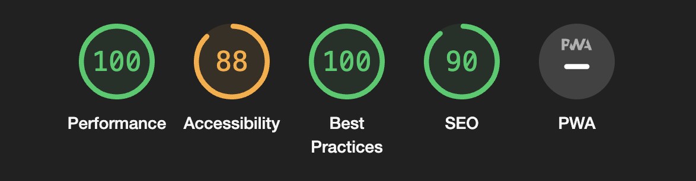

Å teste om nettsiden funker bra for alle er viktig når man lager en nettside. Vi brukte verktøyet Lighthouse for å teste nettsiden. Lighthouse skanner nettsiden for å finne ting som kan gjøre nettsiden enklere å bruke. Da vurderer testverktøyet nettsidens ytelse "performance", tilgjenlighet "accessibility", beste praksis "best practices" og SEO. Det kan for eksempel være om bilder, at vi ikke har tekstbeskrivelse eller om tekst og bakgrunnsfarger ikke har nok kontraster. Om det er lite kontraster kan det være vanskelig for en å lese nettsiden. Ved gjevnlig bruk av lighthouse klarer man å forhindre mye feil på siden, og rette feilene våres tidlig. Dette bidrar til å gjøre nettsiden mer brukervennlig for alle.
Vi startet ved å åpne nettleseren og gå til nettsiden vår. Deretter høyreklikket jeg og fant knappen «inspiser» i kontekstmenyen, inne i dette verktøykassen fant vi Lighthouse hvor vi kjørte en tilgjengelighetskontroll. Denne tilgjengelighetskontrollen viste oss en detaljert rapport om hvordan nettsiden vår fungerer for alle brukere.
Når det kommer til farger valgte vi ikke farger som bare så fine ut, men farger som skiller seg tydelig ut fra nettsiden. Med dette gjør det tydeligere for folk å se hva de kan klikke på. Med andre ord valgte vi farger med tydelig kontrast som virkelig skiller seg ut fra resten av designet, slik at viktige deler av nettsiden blir synlig og forståelig for alle brukere, uavhengig av synsfunksjon.
Dette ga oss en score på 100% på tilgjenglighet. Det betyr at nettsiden vår er tilgjenglig for alle brukere.
